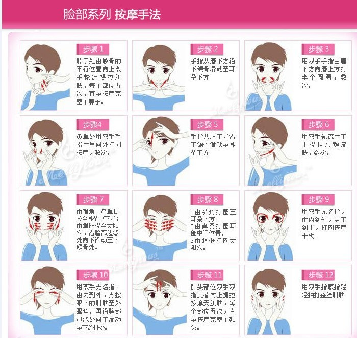
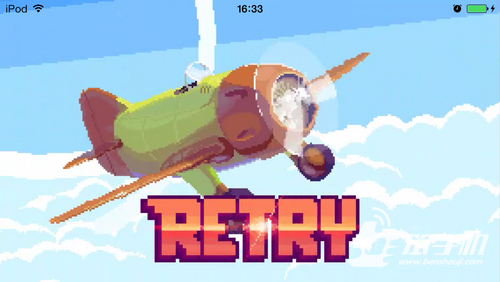

2014-06-06 文章来源：痞子手机 作者：白莈
你还在盯着那个满身格子的像素小鸟狂按手机屏幕？你还在到处炫耀分数或者长吁短叹别人手残党？你奥特了，你爱的小鸟已经飞走了，现在更加残忍的游戏《RETRY(屡败屡战)》来了。这款由Rovio发布的自虐新作正式走上ios的舞台。

《RETRY(屡败屡战)》延续继承了清新的格子像素风格。关卡场景细节清晰，色彩饱和，怀旧的同时也不失可爱，吸引休闲党的眼球。
这款手游的中心是这辆有着绿色机身的螺旋小飞机，跟像素小鸟的操作类似，碰触一次屏幕，小飞机则获得上身的冲力。操作过程中，既要控制好飞行的高度，又要时刻盯着穿插的角度。只有娴熟运用得当，才能保持小飞机平稳的飞行。
当然，游戏有比像素小鸟更加虐人的是小飞机旋转中可以倒着飞行，这可是个技术活，因为一不小心，你可能就被虐得惨不忍睹。

《RETRY》不像像素小鸟那样一关制，相反，它让玩家有中途休息的多个关卡，稍稍给你喘息的机会，再加上一点点希望的盼头，这也正是游戏最抓心的地方。
当然，游戏除了这些大方面的提升外，还加入了诸多的地形关卡，停机坪、石柱、云彩，各式各样的东西，也许下一秒，你就败在它们手上而不自知。
在市场上充斥着各式各样的山寨小鸟的时候，《RETRY》以其个性鲜明的创新意识和延续的自虐玩法给市场刮起一股暖风。相信钟情于自虐游戏的玩家不会错过这款。